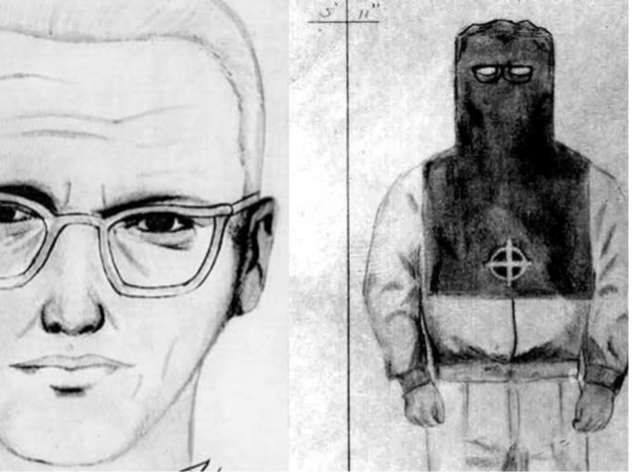

The Zodiac Killer
The Zodiac Killer was an unidentified serial killer who was active in Northern California in the late 1960s. The case has been described as the most famous unsolved murder case in American history.It became part of popular culture and inspired many ameteur detectives to attempt to solve the case.
The Zodiac murdered five known victims in the San Francisco Bay Area between December 1968 and October 1969, operating in rural, urban and suburban areas. He targeted young couples and a lone male cab driver. His known attacks took place in Benicia, Vallejo, Napa County, and the city of San Francisco.
Two of his wounded victims survived. The Zodiac claimed to have murdered 37 victims. He has been linked to several other cold cases, some in Southern California or outside the state. The Zodiac coined his signature name in a series of taunting letters and cards that he mailed to regional newspapers, in which he threatened killing sprees and bombings if they were not printed in the paper.
Some of his letters include cryptograms, or ciphers, in these riddles the Zodiac claimed that he was collecting his victims as slaves for the afterlife. Of the four ciphers found, only two have been solved, with hte most recent one being solved in 2020.
While many theories suggest the identity of the killer, only one has been publicly named by the police, Arthur Leigh Allen, a former elementary school teacher and convicted sex offender who died in 1992. Even though the Zodiac ceased communications in 1974, the odd nature of this case has led to international interest that has been sustained through the decades. The San Francisco Police Department marked the case inactive in 2004, but re-opened it at some point just before March 2007. The case also has remained open in the city of Vallejo, as well as in Napa and Solano. The California Department of Justice has maintained an open case file on the Zodiac murders since 1969.